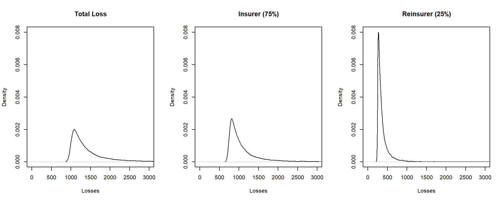

Chapter 10 Insurance Portfolio Management including Reinsurance
Chapter Preview. An insurance portfolio is simply a collection of insurance contracts. To help manage the uncertainty of the portfolio, this chapter
- quantifies unusually large obligations by examining the tail of the distribution,
- quantifies the overall riskiness by introducing summaries known as risk measures, and
- discusses options of spreading portfolio risk through reinsurance, the purchase of insurance protection by an insurer.
10.1 Introduction to Insurance Portfolios
Most of our analyses in prior chapters has been at the contract level which is an agreement between a policyholder and an insurer. Insurers hold, and manage, portfoliosA collection of contracts that are simply collections of contracts. As in other areas of finance, there are management decision-making choices that occur only at the portfolio level. For example, strategic decision-making does not occur at the contract level. It happens in the conference room, where management reviews available data and possibly steers a new course. From the portfolio perspective, insurers want to do capacity planning, set management policies, and balance the mix of products being booked to grow revenue while controlling volatility.
Conceptually, one can think about an insurance company as nothing more than a collection, or portfolio, of insurance contracts. In Chapter 5 we learned about modeling insurance portfolios as the sum of individual contracts based on assumptions of independence among contracts. Because of their importance, this chapter focuses directly on portfolio distributions.
- Insurance portfoliosA collection, or aggregation, of insurance contracts represent obligations of insurers and so we are particularly interested in probabilities of large outcomes as these represent unusually large obligations. To formalize this concept, we introduce the notion of a heavy-tail distribution in Section 10.2.
- Insurance portfolios represent company obligations and so insurers keep an equivalent amount of assets to meet these obligations. Risk measures, introduced in Section 10.3, summarize the distribution of the insurance portfolio and these summary measures are used to quantify the amount of assets that an insurer needs to retain to meet obligations.
- In Section 3.4, we learned about mechanisms that policyholders use to spread risks such as deductibles and policy limits. In the same way, insurers use similar mechanisms in order to spread portfolio risks. They purchase risk protection from reinsurersA company that sells reinsurance, an insurance company for insurers. This sharing of insurance portfolio risk is described in Section 10.4.
Show Quiz Solution
10.2 Tails of Distributions
In this section, you learn how to:
- Describe a heavy tail distribution intuitively.
- Classify the heaviness of a distribution’s tails based on moments.
- Compare the tails of two distributions.
In 1998 freezing rain fell on eastern Ontario, southwestern Quebec and lasted for six days. The event was double the amount of precipitation in the area experienced in any prior ice storm and resulted in a catastrophe that produced in excess of 840,000 insurance claims. This number is 20\(\%\) more than that of claims caused by the Hurricane Andrew - one of the largest natural disasters in the history of North America. The catastrophe caused approximately 1.44 billion Canadian dollars in insurance settlements which is the highest loss burden in the history of Canada. This is not an isolated example - similar catastrophic events that caused extreme insurance losses are the Hurricane Harvey, Superstorm Sandy, the 2011 Japanese earthquake and tsunami, and so forth.
In the context of insurance, a few large losses hitting a portfolio and then converting into claims usually represent the greatest part of the indemnities paid by insurance companies. The aforementioned losses, also called ‘extremes’, are quantitatively modeled by the tails of the associated probability distributions. From the quantitative modeling standpoint, relying on probabilistic models with improper tails is rather daunting. For instance, periods of financial stress may appear with a higher frequency than expected, and insurance losses may occur with worse severity. Therefore, the study of probabilistic behavior in the tail portion of actuarial models is of utmost importance in the modern framework of quantitative risk management. For this reason, this section is devoted to the introduction of a few mathematical notions that characterize the tail weight of random variables. The applications of these notions will benefit us in the construction and selection of appropriate models with desired mathematical properties in the tail portion, that are suitable for a given task.
Formally, define \(X\) to be the (random) obligations that arise from a collection (portfolio) of insurance contracts. (In earlier chapters, we used \(S\) for aggregate losses. Now, the focus is on distributional aspects of only the collective and so we revert to the traditional \(X\) notation.) We are particularly interested in studying the right tail of the distribution of \(X\), which represents the occurrence of large losses. Informally, a random variable is said to be heavy-tailed if high probabilities are assigned to large values. Note that this by no mean implies the probability density/mass functions are increasing as the value of \(X\) goes to infinity. Indeed for a real-valued random variable, the pdfProbability density function/pmfProbability mass function must diminish at infinity in order to guarantee the total probability to be equal to one. Instead, what we are concernded about is the rate of decay of the pdf/pmf. Unwelcome outcomes are more likely to occur for an insurance portfolio that is described by a loss random variable possessing a heavier (right) tail. Tail weight can be an absolute or a relative concept. Specifically, for the former, we may consider a random variable to be heavy-tailed if certain mathematical properties of the probability distribution are met. For the latter, we can say the tail of one distribution is heavier/lighter than the other if some tail measures are larger/smaller.
Several quantitative approaches have been proposed to classify and compare tail weight. Among most of these approaches, the survival functionOne minus the distribution function. it gives the probability that a rv exceeds a specific value. serves as the building block. In what follows, we introduce two simple yet useful tail classification methods both of which are based on the behavior of the survival function of \(X\).
10.2.1 Classification Based on Moments
One way of classifying the tail weight of a distribution is by assessing the existence of raw moments. Since our major interest lies in the right tails of distributions, we henceforth assume the obligation or loss random variable \(X\) to be positive. At the outset, the \(k-\)th raw moment of a continuous random variable \(X\), introduced in Section 3.1, can be computed as
\[ \mu_k' = \int_0^{\infty} x^k f(x) ~dx = k \int_0^{\infty} x^{k-1} S(x) ~dx, \\ \]
where \(S(\cdot)\) denotes the survival function of \(X\). This expression emphasizes that the existence of the raw moments depends on the asymptotic behavior of the survival function at infinity. Namely, the faster the survival function decays to zero, the higher the order of finite moment (\(k\)) the associated random variablepossesses. You may interpret \(k^{\ast}\) to be the largest value of \(k\) so that the moment is finite. Formally, define \(k^{\ast}=\sup\{k > 0:\mu_k'<\infty \}\), where \(sup\) represents the supremum operator. This observation leads us to the moment-based tail weight classification method, which is defined formally next.
Definition 10.1. Consider a non-negative loss random variable \(X\).
- If all the positive raw moments exist, namely the maximal order of finite moment \(k^{\ast}=\infty\), then \(X\) is said to be light tailed based on the moment method.
- If \(k^{\ast} < \infty\), then \(X\) is said to be heavy tailedA rv is said to be heavy tailed if high probabilities are assigned to large values based on the moment method.
- Moreover, for two positive loss random variables \(X_1\) and \(X_2\) with maximal orders of moment \(k^{\ast}_1\) and \(k^{\ast}_2\) respectively, we say \(X_1\) has a heavier (right) tail than \(X_2\) if \(k^{\ast}_1\leq k^{\ast}_2\).
The first part of Definition 10.1 is an absolute concept of tail weight, while the second part is a relative concept of tail weight which compares the (right) tails between two distributions. Next, we present a few examples that illustrate the applications of the moment-based method for comparing tail weight.
Example 10.2.1. Light tail nature of the gamma distribution. Let \(X\sim gamma(\alpha,\theta)\), with \(\alpha>0\) and \(\theta>0\), then for all \(k>0\), show that \(\mu_k' < \infty\).
Show Example Solution
Example 10.2.2. Light tail nature of the Weibull distribution. Let \(X\sim Weibull(\theta,\tau)\), with \(\theta>0\) and \(\tau>0\), then for all \(k>0\), show that \(\mu_k' < \infty\).
Show Example Solution
The gamma and Weibull distributions are used quite extensively in the actuarial practice. Applications of these two distributions are vast which include, but are not limited to, insurance claim severity modeling, solvency assessment, loss reserving, aggregate risk approximation, reliability engineering and failure analysis. We have thus far seen two examples of using the moment-based method to analyze light-tailed distributions. We document a heavy-tailed example in what follows.
Example 10.2.3. Heavy tail nature of the Pareto distribution. Let \(X\sim Pareto(\alpha,\theta)\), with \(\alpha>0\) and \(\theta>0\), then for \(k>0\)
\[\begin{eqnarray*} \mu_k^{'} &=& \int_0^{\infty} x^k \frac{\alpha \theta^{\alpha}}{(x+\theta)^{\alpha+1}} dx \\ &=& \alpha \theta^{\alpha} \int_{\theta}^{\infty} (y-\theta)^k {y^{-(\alpha+1)}} dy. \end{eqnarray*}\]
Consider a similar integration:
\[\begin{eqnarray*} g_k=\int_{\theta}^{\infty} {y^{k-\alpha-1}} dy=\left\{ \begin{array}{ll} <\infty, & \hbox{for } k<\alpha;\\ =\infty, & \hbox{for } k\geq \alpha. \end{array} \right. \end{eqnarray*}\]
Meanwhile,
\[\lim_{y\rightarrow \infty} \frac{(y-\theta)^k {y^{-(\alpha+1)}}}{y^{k-\alpha-1}}=\lim_{y\rightarrow \infty} (1-\theta/y)^{k}=1.\]
Application of the limit comparison theorem for improper integrals yields \(\mu_k'\) is finite if and only if \(g_k\) is finite. Hence we can conclude that the raw moments of Pareto random variables exist only up to \(k<\alpha\), i.e., \(k^{\ast}=\alpha\), and thus the distribution is heavy-tailed. What is more, the maximal order of finite moment depends only on the shape parameter \(\alpha\) and it is an increasing function of \(\alpha\). In other words, based on the moment method, the tail weight of Pareto random variables is solely manipulated by \(\alpha\) – the smaller the value of \(\alpha\), the heavier the tail weight becomes. Since \(k^{\ast}<\infty\), the tail of Pareto distribution is heavier than those of the gamma and Weibull distributions.
We conclude this section with an open discussion on the limitations of the moment-based method. Despite its simple implementation and intuitive interpretation, there are certain circumstances in which the application of the moment-based method is not suitable. First, for more complicated probabilistic models, the \(k\)-th raw moment may not be simple to derive, and thus the identification of the maximal order of finite moment can be challenging. Second, the moment-based method does not well comply with main body of the well established heavy tail theory in the literature. Specifically, the existence of moment generating functions is arguably the most popular method for classifying heavy tail versus light tail within the community of academic actuaries. However, for some random variables such as the lognormal random variables, their moment generating functions do not exist even that all the positive moments are finite. In these cases, applications of the moment-based methods can lead to different tail weight assessment. Third, when we need to compare the tail weight between two light-tailed distributions both having all positive moments exist, the moment-based method is no longer informative (see, e.g., Examples 10.2.1 and 10.2.2).
10.2.2 Comparison Based on Limiting Tail Behavior
In order to resolve the aforementioned issues of the moment-based classification method, an alternative approach for comparing tail weight is to directly study the limiting behavior of the survival functions.
Definition 10.2. For two random variables \(X\) and \(Y\), let
\[ \gamma=\lim_{t\rightarrow \infty}\frac{S_X(t)}{S_Y(t)}. \] We say that
- \(X\) has a heavier right tail than \(Y\) if \(\gamma=\infty\);
- \(X\) and \(Y\) are proportionally equivalent in the right tail if \(\gamma =c \in (0, \infty)\);
- \(X\) has a lighter right tail than \(Y\) if \(\gamma=0\).
Example 10.2.4. Comparison of Pareto to Weibull distributions. Let \(X\sim Pareto(\alpha, \theta)\) and \(Y\sim Weibull(\tau, \theta)\), for \(\alpha>0\), \(\tau>0\), and \(\theta>0\). Show that the Pareto has a heavier right tail than the Weibull.
Show Example Solution
For some distributions of which the survival functions do not admit explicit expressions, we may find the following alternative formula useful:
\[\begin{eqnarray*} \lim_{t\to \infty} \frac{S_X(t)}{S_Y(t)} &=& \lim_{t \to \infty} \frac{S_X^{'}(t)}{S_Y^{'}(t)} \\ &=& \lim_{t \to \infty} \frac{-f_X(t)}{-f_Y(t)}\\ &=& \lim_{t\to \infty} \frac{f_X(t)}{f_Y(t)}. \end{eqnarray*}\]
given that the density functions exist. This is an application of L’Hôpital’s Rule from calculus.
Example 10.2.5. Comparison of Pareto to gamma distributions. Let \(X\sim Pareto(\alpha, \theta)\) and \(Y\sim gamma(\alpha, \theta)\), for \(\alpha>0\) and \(\theta>0\). Show that the Pareto has a heavier right tail than the gamma.
Show Example Solution
Show Quiz Solution
10.3 Risk Measures
In this section, you learn how to:
- Define the idea of coherence and determine whether or not a risk measure is coherent.
- Define the value-at-risk and calculate this quantity for a given distribution.
- Define the tail value-at-risk and calculate this quantity for a given distribution.
In the previous section, we studied two methods for classifying the weight of distribution tails. We may claim that the risk associated with one distribution is more dangerous (asymptotically) than the others if the tail is heavier. However, knowing one risk is more dangerous (asymptotically) than the others may not provide sufficient information for a sophisticated risk management purpose, and in addition, one is also interested in quantifying how much more. In fact, the magnitude of risk associated with a given loss distribution is an essential input for many insurance applications, such as actuarial pricing, reserving, hedging, insurance regulatory oversight, and so forth.
10.3.1 Coherent Risk Measures
To compare the magnitude of risk in a practically convenient manner, we seek a function that maps the loss random variable of interest to a numerical value indicating the level of riskiness, which is termed the risk measureA measure that summarizes the riskiness, or uncertainty, of a distribution. Put mathematically, the risk measure simply summarizes the distribution function of a random variable as a single number. Two simple risk measures are the mean \(\mathrm{E}[X]\) and the standard deviation \(\mathrm{SD}(X)=\sqrt{\mathrm{Var}(X)}\). Other classical examples of risk measures include the standard deviation principle
\[\begin{equation} H_{\mathrm{SD}}(X)=\mathrm{E}[X]+\alpha \mathrm{SD}(X),\text{ for } \alpha\geq 0, \tag{10.1} \end{equation}\]
and the variance principle \[ H_{\mathrm{Var}}(X)=\mathrm{E}[X]+\alpha \mathrm{Var}(X),\text{ for } \alpha\geq 0. \] One can check that all the aforementioned functions are risk measures in which we input the loss random variable and the functions output a numerical value. On a different note, the function \(H^{\ast}(X)=\alpha X^{\beta}\) for any real-valued \(\alpha,\beta\neq 0\), is not a risk measure because \(H^{\ast}\) produces another random variable rather than a single numerical value.
Since risk measures are scalar measures which aim to use a single numerical value to describe the stochastic nature of loss random variables, it should not be surprising to us that there is no risk measure which can capture all the risk information of the associated random variables. Therefore, when seeking useful risk measures, it is important for us to keep in mind that the measures should be at least
- interpretable practically;
- computable conveniently; and
- able to reflect the most critical information of risk underpinning the loss distribution.
Several risk measures have been developed in the literature. Unfortunately, there is no best risk measure that can outperform the others, and the selection of appropriate risk measure depends mainly on the application questions at hand. In this respect, it is imperative to emphasize that risk is a subjective concept, and thus even given the same problem, there are multifarious approaches to assess risk. However, for many risk management applications, there is a wide agreement that economically sounded risk measures should satisfy four major axioms which we are going to describe in detail next. Risk measures that satisfy these axioms are termed coherent risk measures.
Consider a risk measure \(H(\cdot)\). It is said to be a coherent risk measureA risk measure that is is subadditive, monontonic, has positive homogeneity, and is translation invariant. for two random variables \(X\) and \(Y\) if the following axioms are satisfied.
- Axiom 1. Subadditivity: \(H(X+Y)\leq H(X)+H(Y)\). The economic implication of this axiom is that diversification benefits exist if different risks are combined.
- Axiom 2. Monotonicity: if \(\Pr[X\leq Y]=1\), then \(H(X)\leq H(Y)\). Recall that \(X\) and \(Y\) are random variables representing losses, the underlying economic implication is that higher losses essentially leads to a higher level of risk.
- Axiom 3. Positive homogeneity: \(H(cX)=cH(X)\) for any positive constant \(c\). A potential economic implication about this axiom is that risk measure should be independent of the monetary units in which the risk is measured. For example, let \(c\) be the currency exchange rate between the US and Canadian dollars, then the risk of random losses measured in terms of US dollars (i.e., \(X\)) and Canadian dollars (i.e., \(cX\)) should be different only up to the exchange rate \(c\) (i.e., \(cH(x)=H(cX)\)).
- Axiom 4. Translation invariance: \(H(X+c)=H(X)+c\) for any positive constant \(c\). If the constant \(c\) is interpreted as risk-free cash and \(X\) is an insurance portfolio, then adding cash to a portfolio only increases the portfolio risk by the amount of cash.
Verifying the coherent properties for some risk measures can be quite straightforward, but it can be very challenging sometimes. For example, it is a simple matter to check that the mean is a coherent risk measure.
Special Case. The Mean is a Coherent Risk Measure.
For any pair of random variables \(X\) and \(Y\) having finite means and constant \(c>0\),
- validation of subadditivity: \(\mathrm{E}[X+Y]=\mathrm{E}[X]+\mathrm{E}[Y]\);
- validation of monotonicity: if \(\Pr[X\leq Y]=1\), then \(\mathrm{E}[X]\leq \mathrm{E}[Y]\);
- validation of positive homogeneity: \(\mathrm{E}[cX]=c\mathrm{E}[X]\);
- validation of translation invariance: \(\mathrm{E}[X+c]=\mathrm{E}[X]+c\)
With a little more effort, we can determine the following.
Special Case. The Standard Deviation is not a Coherent Risk Measure.
Show Verification of the Special Case
We have so far checked that \(\mathrm{E}[\cdot]\) is a coherent risk measure, but not \(\mathrm{SD}(\cdot)\). Let us now proceed to study the coherent property for the standard deviation principle (10.1) which is a linear combination of coherent and incoherent risk measures.
Special Case. The Standard Deviation Principle (10.1) is a Coherent Risk Measure.
Show Verification of the Special Case
The literature on risk measures has been growing rapidly in popularity and importance. In the succeeding two subsections, we introduce two indices which have recently earned an unprecedented amount of interest among theoreticians, practitioners, and regulators. They are namely the Value-at-Risk (\(VaR\)) and the Tail Value-at-Risk (\(TVaR\)) measures. The economic rationale behind these two popular risk measures is similar to that for the tail classification methods introduced in the previous section, with which we hope to capture the risk of extremal losses represented by the distribution tails.
10.3.2 Value-at-Risk
In Section 4.1.1.3, we defined the quantile of a distribution. We now look to a special case of this and offer the formal definition of the value-at-riskA risk measure based on a quantile function, or VaR.
Definition 10.3. Consider an insurance loss random variable \(X\). The value-at-risk measure of \(X\) with confidence level \(q\in (0,1)\) is formulated as
\[\begin{eqnarray} VaR_q[X]=\inf\{x:F_X(x)\geq q\}. \tag{10.4} \end{eqnarray}\]
Here, \(inf\) is the infimum operator so that the \(VaR\) measure outputs the smallest value of \(X\) such that the associated cdfCumulative distribution function first exceeds or equates to \(q\). This is simply the quantileThe q-th quantile is the point(s) at which the distribution function is equal to q, i.e. the inverse of the cumulative distribution function. that was introduced in Section 3.1.2 and further developed in Section 4.1.1.3.
Here is how we should interpret \(VaR\) in the context of actuarial applications. The \(VaR\) is a measure of the ‘maximal’ probable loss for an insurance product/portfolio or a risky investment occurring \(q \times 100\%\) of times, over a specific time horizon (typically, one year). For instance, let \(X\) be the annual loss random variable of an insurance product, \(VaR_{0.95}[X]=100\) million means that there is no more than a \(5 \%\) chance that the loss will exceed 100 million over a given year. Owing to this meaningful interpretation, \(VaR\) has become the industrial standard to measuring financial and insurance risks since 1990’s. Financial conglomerates, regulators, and academics often utilize \(VaR\) to measure risk capital, ensure the compliance with regulatory rules, and disclose the financial positions.
Next, we present a few examples about the computation of \(VaR\).
Example 10.3.1. \(VaR\) for the exponential distribution. Consider an insurance loss random variable \(X\) with an exponential distribution having parameter \(\theta\) for \(\theta>0\), then the cdf of \(X\) is given by \[ F_X(x)=1-e^{-x/\theta}, \text{ for } x>0. \] Give a closed-form expression for the \(VaR\).
Show Example Solution
The result reported in Example 10.3.1 can be generalized to any continuous random variables having a strictly increasing cdf. Specifically, the \(VaR\) of any continuous random variables is simply the inverse of the corresponding cdf. Let us consider another example of continuous random variable which has the support from negative infinity to positive infinity.
Example 10.3.2. \(VaR\) for the normal distribution. Consider an insurance loss random variable \(X\sim Normal(\mu,\sigma^2)\) with \(\sigma>0\). In this case, one may interpret the negative values of \(X\) as profit or revenue. Give a closed-form expression for the \(VaR\).
Show Example Solution
In many insurance applications, we have to deal with transformations of random variables. For instance, in Example 10.3.2, the loss random variable \(X\sim Normal(\mu, \sigma^2)\) can be viewed as a linear transformation of a standard normal random variable \(Z\sim Normal(0,1)\), namely \(X=Z\sigma+\mu\). By setting \(\mu=0\) and \(\sigma=1\), it is straightforward for us to check \(VaR_q[Z]=\Phi^{-1}(q).\) A useful finding revealed from Example 10.3.2 is that the \(VaR\) of a linear transformation of the normal random variables is equivalent to the linear transformation of the \(VaR\) of the original random variables. This finding can be further generalized to any random variables as long as the transformations are strictly increasing.
Example 10.3.3. \(VaR\) for transformed variables. Consider an insurance loss random variable \(Y\) with a lognormal distribution with parameters \(\mu \in \mathbf{R}\) and \(\sigma^2>0\). Give an expression of the \(VaR\) of \(Y\) in terms of the standard normal inverse cdf.
Show Example Solution
We have thus far seen a number of examples about the \(VaR\) for continuous random variables, let us consider an example concerning the \(VaR\) for a discrete random variable.
Example 10.3.4. \(VaR\) for a discrete random variable. Consider an insurance loss random variable with the following probability distribution: \[ {\small \Pr[X=x] = \left\{ \begin{array}{ll} 0.75, & \text{for }x=1 \\ 0.20, & \text{for }x=3 \\ 0.05, & \text{for }x=4. \end{array} \right. } \] Determine the \(VaR\) at \(q = 0.6, 0.9, 0.95, 0.95001\).
Show Example Solution
Let us now conclude the current subsection by an open discussion of the \(VaR\) measure. Some advantages of utilizing \(VaR\) include
- possessing a practically meaningful interpretation;
- relatively simple to compute for many distributions with closed-form distribution functions;
- no additional assumption is required for the computation of \(VaR\).
On the other hand, the limitations of \(VaR\) can be particularly pronounced for some risk management practices. We report some of them herein:
- the selection of the confidence level \(q\in (0,1)\) is highly subjective, while the \(VaR\) can be very sensitive to the choice of \(q\) (e.g., in Example 10.3.4, \(VaR_{0.95}[X]=3\) and \(VaR_{0.950001}[X]=4\));
- the scenarios/loss information that are above the \((1-q)\times 100\%\) worst event, are completely neglected;
- \(VaR\) is not a coherent risk measure (specifically, the \(VaR\) measure does not satisfy the subadditivity axiom, meaning that diversification benefits may not be fully reflected).
10.3.3 Tail Value-at-Risk
Recall that the \(VaR\) represents the \((1-q)\times100\%\) chance maximal loss. As we mentioned in the previous section, one major drawback of the \(VaR\) measure is that it does not reflect the extremal losses occurring beyond the \((1-q)\times100\%\) chance worst scenario. For illustrative purposes, let us consider the following slightly unrealistic yet inspiring example.
Example 10.3.5. Consider two loss random variable’s \(X\sim Uniform [0,100]\), and \(Y\) with an exponential distribution having parameter \(\theta=31.71\). We use \(VaR\) at \(95\%\) confidence level to measure the riskiness of \(X\) and \(Y\). Simple calculation yields (see, also, Example 10.3.1), \[ VaR_{0.95}[X]=VaR_{0.95}[Y]=95, \] and thus these two loss distributions have the same level of risk according to \(VaR_{0.95}\). However, \(Y\) is riskier than \(X\) if extremal losses are of major concern since \(X\) is bounded above while \(Y\) is unbounded. Simply quantifying risk by using \(VaR\) at a specific confidence level could be misleading and may not reflect the true nature of risk.
As a remedy, the Tail Value-at-Risk (\(TVaR\)) was proposed to measure the extremal losses that are above a given level of \(VaR\) as an average. We document the definition of \(TVaR\) in what follows. For the sake of simplicity, we are going to confine ourselves to continuous positive random variables only, which are more frequently used in the context of insurance risk management. We refer the interested reader to Hardy (2006) for a more comprehensive discussion of \(TVaR\) for both discrete and continuous random variables.
Definition 10.4. Fix \(q\in (0,1)\), the tail value-at-riskThe expected value of a risk given that the risk exceeds a value-at-risk of a (continuous) random variable \(X\) is formulated as
\[\begin{eqnarray*} TVaR_q[X] &=& \mathrm{E}[X|X>VaR_q[X]], \end{eqnarray*}\]
given that the expectation exists.
In light of Definition 10.4, the computation of \(TVaR\) typically consists of two major components - the \(VaR\) and the average of losses that are above the \(VaR\). The \(TVaR\) can be computed via a number of formulas. Consider a continuous positive random variable \(X\), for notional convenience, henceforth let us write \(\pi_q=VaR_q[X]\). By definition, the \(TVaR\) can be computed via
\[\begin{eqnarray} TVaR_{q}[X]=\frac{1}{(1-q)}\int_{\pi_q}^{\infty}xf_X(x)dx. \tag{10.5} \end{eqnarray}\]
Example 10.3.6. \(TVaR\) for a normal distribution. Consider an insurance loss random variable \(X\sim Normal (\mu,\sigma^2)\) with \(\mu\in \mathbf{R}\) and \(\sigma>0\). Give an expression for \(TVaR\).
Show Example Solution
We mentioned earlier in the previous subsection that the \(VaR\) of a strictly increasing function of random variable is equal to the function of \(VaR\) of the original random variable. Motivated by the results in Example 10.3.6, one can show that the \(TVaR\) of a strictly increasing linear transformation of random variable is equal to the function of \(VaR\) of the original random variable. This is due to the linearity property of expectations. However, the aforementioned finding cannot be extended to non-linear functions. The following example of lognormal random variable serves as a counter example.
Example 10.3.7. \(TVaR\) of a lognormal distribution. Consider an insurance loss random variable \(X\) lognormal distribution with parameters \(\mu \in \mathbf{R}\) and \(\sigma>0\). Show that
\[ TVaR_q[X] = \frac{e^{\mu+\sigma^2/2}}{(1-q)} \Phi(\Phi^{-1}(q)-\sigma). \]
Show Example Solution
Clearly, the \(TVaR\) of lognormal random variable is not the exponential of the \(TVaR\) of normal random variable.
For distributions of which the survival distribution functions are more tractable to work with, we may apply the integration by parts technique (assuming the mean is finite) to rewrite equation (10.5) as
\[\begin{eqnarray*} TVaR_{q}[X]&=&\left[-x S_X(x)\big |_{\pi_q}^{\infty}+\int_{\pi_q}^{\infty}S_X(x)dx\right]\frac{1}{(1-q)}\\ &=& \pi_q +\frac{1}{(1-q)}\int_{\pi_q}^{\infty}S_X(x)dx. \end{eqnarray*}\]
Example 10.3.8. \(TVaR\) of an exponential distribution. Consider an insurance loss random variable \(X\) with an exponential distribution having parameter \(\theta\) for \(\theta>0\). Give an expression for the \(TVaR\).
Show Example Solution
It can also be helpful to express the \(TVaR\) in terms of limited expected values. Specifically, we have
\[\begin{eqnarray} TVaR_q[X] &=& \int_{\pi_q}^{\infty} (x-\pi_q+\pi_q)f_X(x)dx/(1-q) \nonumber\\ &=& \pi_q+\frac{1}{(1-q)}\int_{\pi_q}^{\infty} (x-\pi_q)f_X(x)dx\nonumber\\ &=& \pi_q+e_X(\pi_q)\nonumber\\ &=& \pi_q +\frac{\left({\mathrm{E}[X]-\mathrm{E}[X\wedge\pi_q]}\right)}{(1-q)}, \tag{10.7} \end{eqnarray}\]
where \(e_X(d)=\mathrm{E}[X-d|X>d]\) for \(d>0\) denotes the mean excess loss functionThe expected value of a loss in excess of a quantity, given that the loss exceeds the quantity. For many commonly used parametric distributions, the formulas for calculating \(\mathrm{E}[X]\) and \(\mathrm{E}[X\wedge\pi_q]\) can be found in a table of distributions.
Example 10.3.9. \(TVaR\) of a Pareto distribution. Consider a loss random variable \(X\sim Pareto(\theta,\alpha)\) with \(\theta>0\) and \(\alpha>0\). The cdf of \(X\) is given by \[ F_X(x)=1-\left(\frac{\theta}{\theta+x} \right)^{\alpha}, \text{ for } x>0 . \]
Fix \(q\in (0,1)\) and set \(F_X(\pi_q)=q\), we readily obtain
\[\begin{eqnarray} \pi_q=\theta\left[(1-q)^{-1/\alpha}-1 \right]. \tag{10.8} \end{eqnarray}\]
From Section 18.2, we know \[ \mathrm{E}[X]=\frac{\theta}{\alpha-1}, \] and \[ \mathrm{E}[X\wedge \pi_q]=\frac{\theta}{\alpha-1}\left[ 1-\left(\frac{\theta}{\theta+\pi_q}\right)^{\alpha-1} \right]. \] Evoking equation (10.7) yields
\[\begin{eqnarray*} TVaR_q[X] &=& \pi_q+\frac{\theta}{\alpha-1} \frac{(\theta/(\theta+\pi_q))^{\alpha-1}} {(\theta/(\theta+\pi_q))^{\alpha}}\\ &=&\pi_q +\frac{\theta}{\alpha-1}\left( \frac{\pi_q+\theta}{\theta} \right)\\ &=& \pi_q+\frac{\pi_q+\theta}{\alpha-1}, \end{eqnarray*}\]
where \(\pi_q\) is given by (10.8).
The following measure is closely related to \(TVaR\).
Definition 10.5. Fix \(q\in (0,1)\), the conditional value at risk of a random variable \(X\) is formulated as
\[ CVaR_q[X] = \frac{1}{1-q}\int_{q}^{1} VaR_{\alpha}[X]\ d\alpha . \]
The conditional value at risk is also known as the average value at risk (AVaR) and the expected short-fall (ES). It can be shown that \(CVaR_q[X] = TVaR_q[X]\) when \(\Pr(X=VaR_q[X])=0\) which holds for continuous random variables. That, is, if \(X\) is continuous, then via a change of variables, we can rewrite equation (10.5) as
\[\begin{eqnarray} TVaR_{q}[X] &=& \frac{1}{1-q}\int_{q}^{1} VaR_{\alpha}[X]\ d\alpha. \tag{10.9} \end{eqnarray}\]
This alternative formula (10.9) tells us that \(TVaR\) is the average of \(VaR_{\alpha}[X]\) with varying degree of confidence level over \(\alpha\in [q,1]\). Therefore, the \(TVaR\) effectively resolves most of the limitations of \(VaR\) outlined in the previous subsection. First, due to the averaging effect, the \(TVaR\) may be less sensitive to the change of confidence level compared with \(VaR\). Second, all the extremal losses that are above the \((1-q)\times 100\%\) worst probable event are taken in account.
In this respect, one can see that for any given \(q\in (0,1)\)
\[ TVaR_q[X]\geq VaR_q[X]. \] Third and perhaps foremost, \(TVaR\) is a coherent risk measure and thus is able to more accurately capture the diversification effects of insurance portfolio. Herein, we do not intend to provide the proof of the coherent feature for \(TVaR\), which is considered to be challenging technically.
Show Quiz Solution
10.4 Reinsurance
In this section, you learn how to:
- Define basic reinsurance treaties including proportional, quota share, non-proportional, stop-loss, excess of loss, and surplus share.
- Interpret the optimality of quota share for reinsurers and compute optimal quota share agreements.
- Interpret the optimality of stop-loss for insurers.
- Interpret and calculate optimal excess of loss retention limits.
Recall that reinsuranceInsurance purchased by an insurer is simply insurance purchased by an insurer. Insurance purchased by non-insurers is sometimes known as primary insuranceInsurance purchased by a non-insurer to distinguish it from reinsurance. Reinsurance differs from personal insurance purchased by individuals, such as auto and homeowners insurance, in contract flexibility. Like insurance purchased by major corporations, reinsurance programs are generally tailored more closely to the buyer. For contrast, in personal insurance buyers typically cannot negotiate on the contract terms although they may have a variety of different options (contracts) from which to choose.
The two broad types are proportional and non-proportional reinsurance. A proportional reinsuranceAn agreement between a reinsurer and a ceding company (also known as the reinsured) in which the reinsurer assumes a given percent of losses and premium contract is an agreement between a reinsurer and a ceding companyA company that purchases reinsurance (also known as the reinsured) (also known as the reinsuredA company that purchases reinsurance (also known as the ceding company)) in which the reinsurer assumes a given percent of losses and premium. A reinsurance contract is also known as a treatyA reinsurance contract that applies to a designated book of business or exposures.. Non-proportional agreements are simply everything else. As examples of non-proportional agreements, this chapter focuses on stop-loss and excess of loss contracts. For all types of agreements, we split the total risk \(X\) into the portion taken on by the reinsurer, \(Y_{reinsurer}\), and that retained by the insurer, \(Y_{insurer}\), that is, \(X= Y_{insurer}+Y_{reinsurer}\).
The mathematical structure of a basic reinsurance treaty is the same as the coverage modifications of personal insurance introduced in Chapter 3. For a proportional reinsurance, the transformation \(Y_{insurer} = c X\) is identical to a coinsurance adjustment in personal insurance. For stop-loss reinsurance, the transformation \(Y_{reinsurer} = \max(0,X-M)\) is the same as an insurer’s payment with deductible \(M\) and \(Y_{insurer} = \min(X,M) = X \wedge M\) is equivalent to what a policyholder pays with deductible \(M\). For practical applications of the mathematics, in personal insurance the focus is generally upon the expectation as this is a key ingredient used in pricing. In contrast, for reinsurance the focus is on the entire distribution of the risk, as the extreme events are a primary concern of the financial stability of the insurer and reinsurer.
This section describes the foundational and most basic of reinsurance treaties: Section 10.4.1 for proportional and Section 10.4.2 for non-proportional reinsurance. Section 10.4.3 gives a flavor of more complex contracts.
10.4.1 Proportional Reinsurance
The simplest example of a proportional treaty is called quota shareA proportional treaty where the reinsurer receives a flat percent of the premium for the book of business reinsured and pays a percentage of losses, including allocated loss adjustment expenses. the reinsurer may also pays the ceding company a ceding commission which is designed to reflect the differences in underwriting expenses incurred..
- In a quota share treaty, the reinsurer receives a flat percent, say 50%, of the premium for the book of business reinsured.
- In exchange, the reinsurer pays 50% of losses, including allocated loss adjustment expenses
- The reinsurer also pays the ceding company a ceding commission which is designed to reflect the differences in underwriting expenses incurred.
The amounts paid by the primary insurer and the reinsurer are summarized as \[ Y_{insurer} = c X \ \ \text{and} \ \ \ Y_{reinsurer} = (1-c) X, \] where \(c\in (0,1)\) denotes the proportion retained by the insurer. Note that \(Y_{insurer}+Y_{reinsurer}=X\).
Example 10.4.1. Distribution of losses under quota share. To develop an intuition for the effect of quota-share agreement on the distribution of losses, the following is a short R demonstration using simulation. The accompanying figure provides the relative shapes of the distributions of total losses, the retained portion (of the insurer), and the reinsurer’s portion.

Show the R Code
10.4.1.2 Optimizing Quota Share Agreements for Insurers
Now assume \(n\) risks in the portfolio, \(X_1, \ldots, X_n,\) so that the portfolio sum is \(X= X_1 + \cdots + X_n\). For simplicity, we focus on the case of independent risks (extensions to dependence is the subject of Chapter 14). Each risk \(X_i\) may represent risk of an individual policy, claim, or a sub-portfolio, depending on the application. As an example of the latter, the insurer may subdivide its portfolio into subportfolios consisting of lines of business such as (1) personal auto, (2) commercial auto, (3) homeowners, (4) workers’ compensation, and so forth.
In general, let us consider a variation of the basic quota share agreement where the amount retained by the insurer may vary with each risk, say \(c_i\). Thus, the insurer’s portion of the portfolio risk is \(Y_{insurer} = \sum_{i=1}^n c_i X_i\). What is the best choice of the proportions \(c_i\)?
To formalize this question, we seek to find those values of \(c_i\) that minimize \(Var (Y_{insurer})\) subject to the constraint that \(E (Y_{insurer}) = K.\) The requirement that \(E (Y_{insurer}) = K\) suggests that the insurers wishes to retain a revenue in at least the amount of the constant \(K\). Subject to this revenue constraint, the insurer wishes to minimize the uncertainty of the retained risks as measured by the variance.
Show the Optimal Retention Proportions
From the math, it turns out that the constant for the \(i\)th risk, \(c_i\) is proportional to \(\frac{E(X_i)}{Var (X_i)}\). This is intuitively appealing. Other things being equal, a higher revenue as measured by \(E (X_i)\) means a higher value of \(c_i\). In the same way, a higher value of uncertainty as measured by \(Var(X_i)\) means a lower value of \(c_i\). The proportional scaling factor is determined by the revenue requirement \(E(Y_{insurer}) = K\). The following example helps to develop a feel for this relationship.
Example 10.4.2. Three Pareto risks. Consider three risks that have a Pareto distribution, each having a different set of parameters (so they are independent but non-identical). Specifically, use the parameters:
- \(\alpha_1 =3\), \(\theta_1=1000\) for the first risk \(X_1\),
- \(\alpha_2 =3\), \(\theta_2=2000\) for the second risk \(X_2\), and
- \(\alpha_3 =4\), \(\theta_3=3000\) for the third risk \(X_3\).
Provide a graph that give values of \(c_1\), \(c_2\), and \(c_3\) for a required revenue \(K\). Note that these values increase linearly with \(K\).
Show an Example with Three Pareto Risks

10.4.2 Non-Proportional Reinsurance
10.4.2.1 The Optimality of Stop-Loss Insurance
Under a stop-lossUnder a stop-loss arrangement, the insurer sets a retention level and pays in full total claims less than the level with the reinsurer paying the excess. arrangement, the insurer sets a retention level \(M (>0)\) and pays in full total claims for which \(X \le M\). Further, for claims for which \(X > M\), the primary insurer pays \(M\) and the reinsurer pays the remaining amount \(X-M\). Thus, the insurer retains an amount \(M\) of the risk. Summarizing, the amounts paid by the primary insurer and the reinsurer are
\[ Y_{insurer} = \begin{cases} X & \text{for } X \le M\\ M & \text{for } X >M \\ \end{cases} \ \ \ \ = \min(X,M) = X \wedge M \]
and
\[ Y_{reinsurer} = \begin{cases} 0 & \text{for } X \le M\\ X- M & \text{for } X >M \\ \end{cases} \ \ \ \ = \max(0,X-M) . \]
As before, note that \(Y_{insurer}+Y_{reinsurer}=X\).
The stop-loss type of contract is particularly desirable for the insurer. Similar to earlier, suppose that an insurer and reinsurer wish to enter a contract so that \(Y_{insurer}=g(X)\) and \(Y_{reinsurer}=X-g(X)\) for some generic retention functionA function that maps the insurer portfolio loss into the amount of loss retained by the insurer. \(g(\cdot)\). Suppose further that the insurer only cares about the variability of retained claims and is indifferent to the choice of \(g\) as long as \(Var(Y_{insurer})\) can be minimized. Again, we impose the constraint that \(E(Y_{insurer}) = K\); the insurer needs to retain a revenue \(K\). Subject to this revenue constraint, the insurer wishes to minimize uncertainty of the retained risks (as measured by the variance). Then, the following result shows that the stop-loss reinsurance treaty minimizes the reinsurer’s uncertainty as measured by \(Var(Y_{reinsurer})\).
Proposition. Suppose that \(E(Y_{insurer})=K.\) Then, \(Var (X \wedge M) \le Var(g(X))\) for all \(g(.)\), where \(M\) is such that \(E(X \wedge M)=K\).
Show the Justification of the Proposition
The proposition is intuitively appealing - with stop-loss insurance, the reinsurer takes the responsibility for very large claims in the tail of the distribution, not the insurer.
10.4.2.2 Excess of Loss
A closely related form of non-proportional reinsurance is the excess of lossUnder an excess of loss arrangement, the insurer sets a retention level for each claim and pays claim amounts less than the level with the reinsurer paying the excess. coverage. Under this contract, we assume that the total risk \(X\) can be thought of as composed as \(n\) separate risks \(X_1, \ldots, X_n\) and that each of these risks are subject to an upper limit, say, \(M_i\). So the insurer retains
\[ Y_{insurer} = \sum_{i=1}^n Y_{i,insurer}, \ \ \ \ \text{where} \ \ \ \ \ Y_{i,insurer} = X_i \wedge M_i. \] and the reinsurer is responsible for the excess, \(Y_{reinsurer}=X - Y_{insurer}\). The retention limits may vary by risk or may be the same for all risks, that is, \(M_i =M\), for all \(i\).
10.4.2.3 Optimal Choice for Excess of Loss Retention Limits
What is the best choice of the excess of loss retention limits \(M_i\)? To formalize this question, we seek to find those values of \(M_i\) that minimize \(Var(Y_{insurer})\) subject to the constraint that \(E(Y_{insurer}) = K.\) Subject to this revenue constraint, the insurer wishes to minimize the uncertainty of the retained risks (as measured by the variance).
Show the Optimal Retention Proportions
From the math, it turns out that the retention limit less the expected insurer’s claims, \(M_i - E(X_i \wedge M_i)\), is the same for all risks. This is intuitively appealing.
Example 10.4.3. Excess of loss for three Pareto risks. Consider three risks that have a Pareto distribution, each having a different set of parameters (so they are independent but non-identical). Use the same set of parameters as in Example 10.4.2. For this example:
- Show numerically that the optimal retention limits \(M_1\), \(M_2\), and \(M_3\) resulting retention limit minus expected insurer’s claims, \(M_i - E(X_i \wedge M_i)\), is the same for all risks, as we derived theoretically.
- Further, graphically compare the distribution of total risks to that retained by the insurer and by the reinsurer.
Show an Example with Three Pareto Risks

10.4.3 Additional Reinsurance Treaties
10.4.3.2 Layers of Coverage
One can also extend non-proportional stop-loss treaties by introducing additional parties to the contract. For example, instead of simply an insurer and reinsurer or an insurer and a policyholder, think about the situation with all three parties, a policyholder, insurer, and reinsurer, who agree on how to share a risk. More generally, we consider \(k\) parties. If \(k=3\), it could be an insurer and two different reinsurers.
Example 10.4.4. Layers of coverage for three parties.
- Suppose that there are \(k=3\) parties. The first party is responsible for the first 100 of claims, the second responsible for claims from 100 to 3000, and the third responsible for claims above 3000.
- If there are four claims in the amounts 50, 600, 1800 and 4000, then they would be allocated to the parties as follows:
| Layer | Claim 1 | Claim 2 | Claim 3 | Claim 4 | Total |
|---|---|---|---|---|---|
| (0, 100] | 50 | 100 | 100 | 100 | 350 |
| (100, 3000] | 0 | 500 | 1700 | 2900 | 5100 |
| (3000, \(\infty\)) | 0 | 0 | 0 | 1000 | 1000 |
| Total | 50 | 600 | 1800 | 4000 | 6450 |
To handle the general situation with \(k\) groups, partition the positive real line into \(k\) intervals using the cut-points \[0 = M_0 < M_1 < \cdots < M_{k-1} < M_k = \infty.\]
Note that the \(j\)th interval is \((M_{j-1}, M_j]\). Now let \(Y_j\) be the amount of risk shared by the \(j\)th party. To illustrate, if a loss \(x\) is such that \(M_{j-1} <x \le M_j\), then \[\left(\begin{array}{c} Y_1\\ Y_2 \\ \vdots \\ Y_j \\Y_{j+1} \\ \vdots \\Y_k \end{array}\right) =\left(\begin{array}{c} M_1-M_0 \\ M_2-M_1 \\ \vdots \\ x-M_{j-1} \\ 0 \\ \vdots \\0 \end{array}\right)\]
More succinctly, we can write \[Y_j = \min(X,M_j) - \min(X,M_{j-1}) .\]
With the expression \(Y_j = \min(X,M_j) - \min(X,M_{j-1})\), we see that the \(j\)th party is responsible for claims in the interval \((M_{j-1}, M_j].\) With this, you can check that \(X = Y_1 + Y_2 + \cdots + Y_k.\) As emphasized in the following example, we also remark that the parties need not be different.
Example 10.4.5.
- Suppose that a policyholder is responsible for the first 100 of claims and all claims in excess of 100,000. The insurer takes claims between 100 and 100,000.
- Then, we would use \(M_1 = 100\), \(M_2 =100000\).
- The policyholder is responsible for \(Y_1 =\min(X,100)\) and \(Y_3 = X - \min(X,100000) = \max(0, X-100000)\).
For additional reading, see the Wisconsin Property Fund site for an example on layers of reinsurance.
10.4.3.3 Portfolio Management Example
Many other variations of the foundational contracts are possible. For one more illustration, consider the following.
Example 10.4.6. Portfolio Management. You are the Chief Risk Officer of a telecommunications firm. Your firm has several property and liability risks. We will consider:
- \(X_1\) - buildings, modeled using a gamma distribution with mean 200 and scale parameter 100.
- \(X_2\) - motor vehicles, modeled using a gamma distribution with mean 400 and scale parameter 200.
- \(X_3\) - directors and executive officers risk, modeled using a Pareto distribution with mean 1000 and scale parameter 1000.
- \(X_4\) - cyber risks, modeled using a Pareto distribution with mean 1000 and scale parameter 2000.
Denote the total risk as \(X = X_1 + X_2 + X_3 + X_4\). For simplicity, you assume that these risks are independent. (Later, in Section 14.6, we will consider the more complex case of dependence.)
To manage the risk, you seek some insurance protection. You wish to manage internally small building and motor vehicles amounts, up to \(M_1\) and \(M_2\), respectively. You seek insurance to cover all other risks. Specifically, the insurer’s portion is \[ Y_{insurer} = (X_1 - M_1)_+ + (X_2 - M_2)_+ + X_3 + X_4 ,\] so that your retained risk is \(Y_{retained}= X- Y_{insurer} =\) \(\min(X_1,M_1) + \min(X_2,M_2)\). Using deductibles \(M_1=\) 100 and \(M_2=\) 200:
- Determine the expected claim amount of (i) that retained, (ii) that accepted by the insurer, and (iii) the total overall amount.
- Determine the 80th, 90th, 95th, and 99th percentiles for (i) that retained, (ii) that accepted by the insurer, and (iii) the total overall amount.
- Compare the distributions by plotting the densities for (i) that retained, (ii) that accepted by the insurer, and (iii) the total overall amount.
Show Example Solution with R Code

10.5 Further Resources and Contributors
- Edward W. (Jed) Frees, University of Wisconsin-Madison, and Jianxi Su, Purdue University are the principal authors of the initial version of this chapter. Email: jfrees@bus.wisc.edu and/or jianxi@purdue.edu for chapter comments and suggested improvements.
- Chapter reviewers include: Fei Huang, Hirokazu (Iwahiro) Iwasawa, Peng Shi, Ranee Thiagarajah, Ping Wang, and Chengguo Weng.
Some of the examples from this chapter were borrowed from Clark (1996), Klugman, Panjer, and Willmot (2012), and Bahnemann (2015). These resources provide excellent sources for additional discussions and examples.